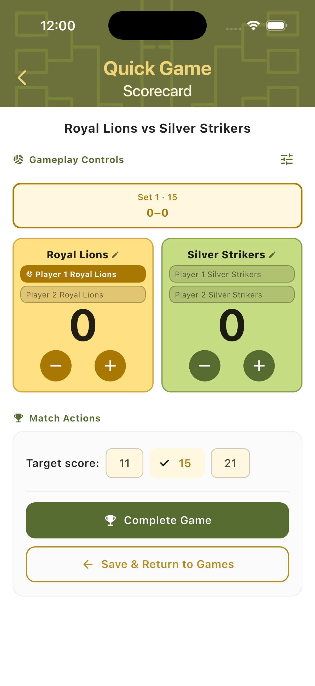
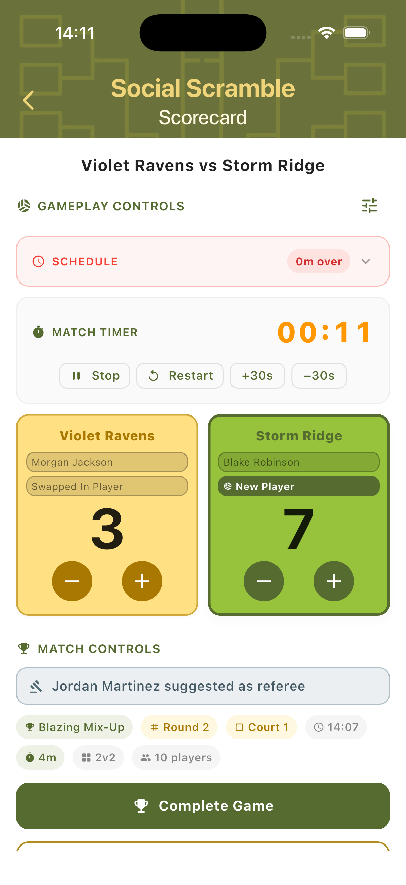
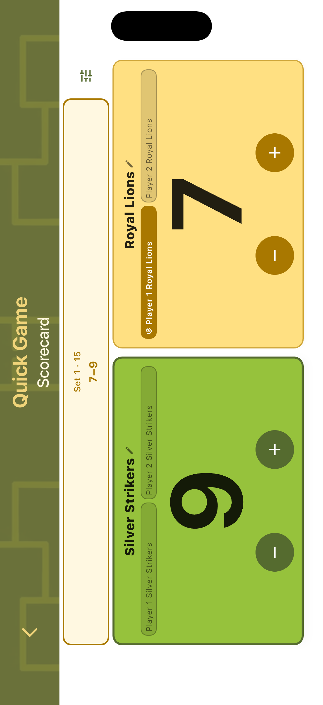
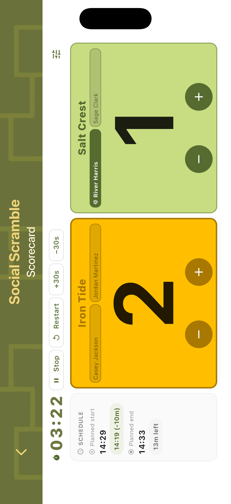
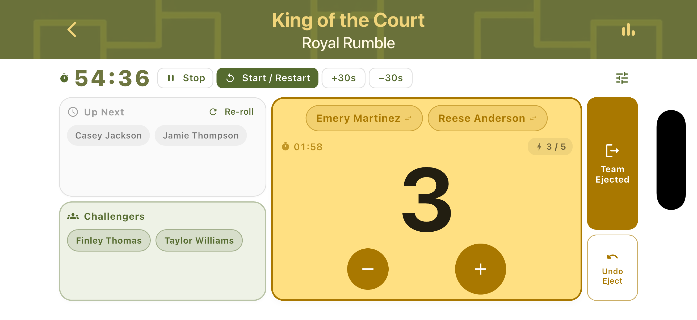

Match Scoring
TournaQ's scorecard is the core of every game and tournament. It works the same way regardless of mode — two large team cards with + and − buttons, a serving player indicator, match context chips, and an undo option for corrections. The scorecard adapts to each format's rules: a countdown timer for Social Scramble, set tabs for Best of Three matches, escape and loss counters for Doghouse, and a session timer for King of the Court and Doghouse. Every scorecard is also available in landscape orientation for table-side or net-post use.

Scorecards Across Modes
Each mode has a scorecard tailored to its format. The core layout is consistent — team cards, score buttons, player names, match context — but the additional controls, timers, and counters adapt to what that mode needs.
Timer-Based Scoring
Social Scramble scorecards run a countdown timer for each match. The timer shows time remaining at the top. Both team cards show player names and scores. The schedule status (Overdue / Due / Upcoming) is shown inline. A suggested referee appears in the Match Controls section below. Tap Start Match to begin, or Manually Set Score to skip the timer.

Multi-Set Scoring
Bracket tournament scorecards (e.g. Single Elimination) support Best of Three Sets. Set tabs run across the top — completed sets are greyed out with the final score, the active set is highlighted in gold, and the third tab is inactive until needed. The serving team's card is highlighted in gold; the leading team's card turns green. Tap Complete Set after each set.

Counter-Based Scoring
Session modes like Doghouse show additional counters alongside the score. The team card displays the escape progress counter (e.g. 1/3 escape points) and the loss counter (e.g. 0/3 losses) inline. A separate Game Lost panel on the right tracks cumulative losses with an Undo button. The session timer counts down in parallel across all games.

Landscape Mode
Every scorecard in TournaQ supports landscape orientation. Rotating the device rearranges the layout to suit a device placed flat on a table, mounted to a net post, or held sideways courtside. Controls move to the left column and team cards expand on the right. The layout varies slightly by mode to surface the most relevant information.
Quick Game
In landscape, the Quick Game scorecard shows the current set info and player names on the left, with large score digits and +/- buttons for each team on the right. The active server is highlighted. Useful for a flat net-post setup where portrait orientation is hard to read from the side.

Social Scramble
The Scramble landscape view moves the timer and timer controls to the left column. Both team cards stack vertically on the right with player names and score buttons. The schedule status and match context remain visible without scrolling. Well suited for placing the device alongside the court during timed matches.

Single Elimination
The Single Elimination landscape scorecard places set tabs in the left column — showing completed set results and the active set score side by side. Team cards appear on the right. A schedule panel at the bottom shows the planned start time, actual start (with a delay indicator), estimated end, and minutes remaining in the schedule slot.

King of the Court
In King of the Court landscape, the session timer and controls (Stop / Start-Restart / +30s / −30s) appear in the left column. The Up Next and Challengers queue rows sit below. The defending team's card fills the right side with the score, player names, strike counter, and +/− buttons. The Team Ejected and Undo Eject buttons remain accessible at the top.

Doghouse
The Doghouse landscape layout shows the session timer and controls on the left. The In Doghouse team card occupies the right with the current score, player names, time on court, and escape/loss counters. The Game Lost panel appears above the team card on the right side. The layout keeps all critical information visible without scrolling during active play.

Scoring Features
Core point tracking, set management, and score correction are live across all modes. Completed matches are saved automatically with full history.
-
Available
Live point-by-point scoring
Tap + or − to award or remove points for either team in real time. Large buttons are optimised for one-handed use during active play without looking away from the court.
-
Available
Set management
Automatic set tracking with configurable winning conditions. TournaQ handles the transition between sets — including third-set activation in Best of Three matches — without manual input.
-
Available
Serving player tracking
The active server is highlighted within the team card. Service changes when the non-serving team scores. The serving player indicator updates automatically on every point.
-
Available
Score correction
Undo the last point at any time using the Undo button on the scorecard or Game Lost panel. Mistakes during fast play can be corrected immediately without losing match state.
-
Available
Side change alerts
When the combined score reaches the halfway point within a set, a Side Change dialog appears automatically. Confirm the physical switch and scoring continues with the updated court layout.
-
Available
Match result & history
Completed matches are saved locally with full score history per set. Quick Games, tournament brackets, and session modes all log results to their respective hubs.
-
Available
Landscape scorecard
Rotate the device at any point to switch to landscape mode. All controls remain accessible in the rearranged layout — designed for net-post placement or table-side scoring.
-
Planned
Timeout tracking
Record timeouts per team per set, in line with standard beach volleyball rules.
-
Planned
Player point statistics
Track individual player contributions within a match — points won, errors, and serve effectiveness.
Have a question about match scoring, spotted something missing, or want to suggest an improvement?